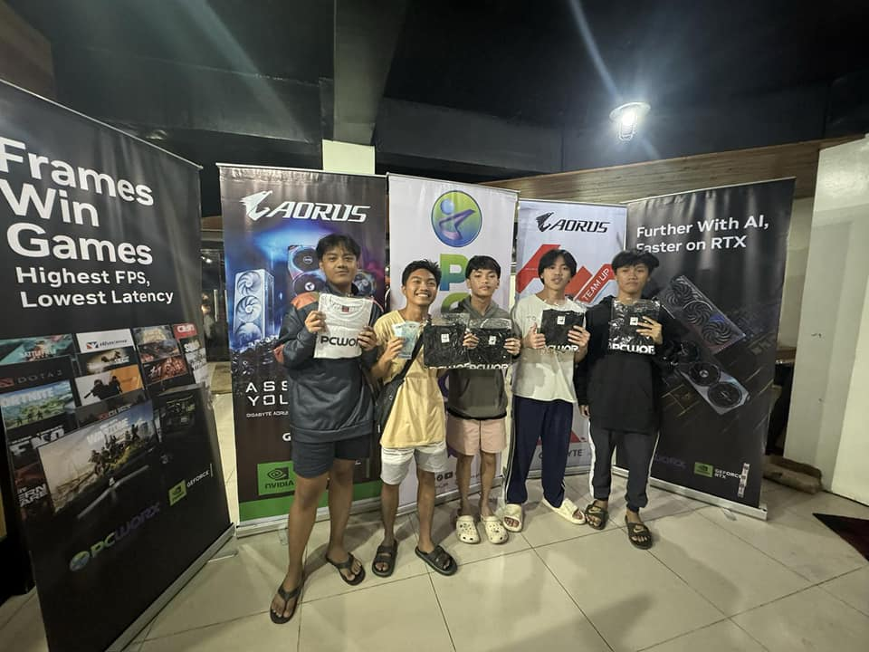

Gaming & Esports
I love to compete in esports, especially in games like Valorant. I competed in TNC Dasmariñas in Valorant three times. I placed 3rd once and 2nd place twice, which was a big achievement for me. I also peaked at 3,129th place in the Pacific (Asia) region on the Valorant leaderboards! Esports brings out my competitive side and helps me refine my skills in teamwork and strategy.
Tech & Gaming
As a BSIS student, I’m deeply passionate about technology, gaming, and all things digital. Whether I’m tinkering with gadgets, programming, or diving into online games, I enjoy learning and growing in the tech world.